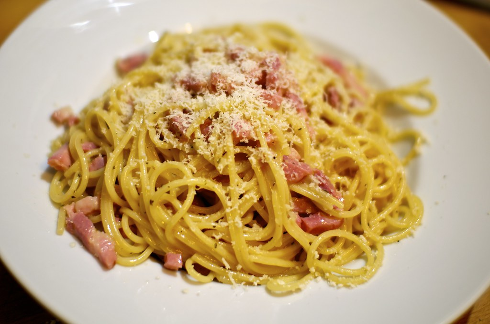

Spaghetti Carbonara

Description
Spaghetti Carbonara is a classic Italian pasta dish from Rome, made with egg, hard cheese (typically Pecorino Romano or Parmigiano-Reggiano), pancetta, and pepper. The dish arrives at a creamy consistency without using cream, as the eggs are cooked gently by the heat of the pasta to form a rich, velvety sauce. It's a simple yet indulgent dish known for its comforting flavors and quick preparation time, making it a favorite for both weeknight dinners and special occasions.
- 400g spaghetti
- 150g pancetta or guanciale, cubed
- 2 large eggs
- 1 egg yolk
- 1 cup Pecorino Romano or Parmigiano-Reggiano cheese, grated
- Black pepper, freshly ground
- Salt, to taste
Steps
- Bring a large pot of salted water to a boil. Add spaghetti and cook until al dente. Reserve 1 cup of pasta water before draining.
- In a skillet over medium heat, cook the pancetta until it is crispy, about 3 to 4 minutes. Remove from heat and set aside.
- In a bowl, whisk together the eggs, egg yolk, grated cheese, and a generous amount of black pepper.
- Quickly toss the hot spaghetti with the egg mixture, adding reserved pasta water a little at a time to create a creamy sauce.
- Add the pancetta to the pasta and toss again.
- Serve immediately, topped with additional grated cheese and black pepper if desired.
Odin recipes